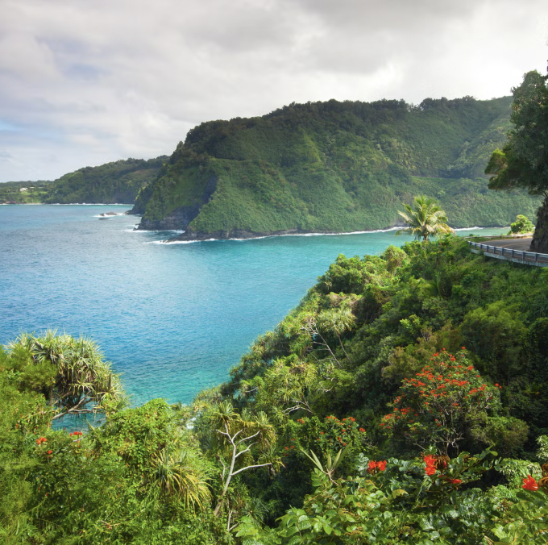
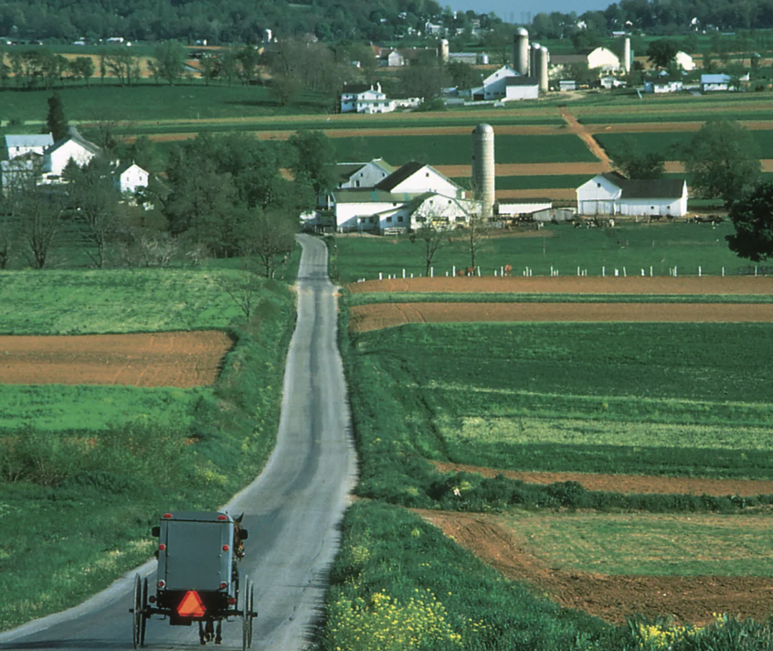
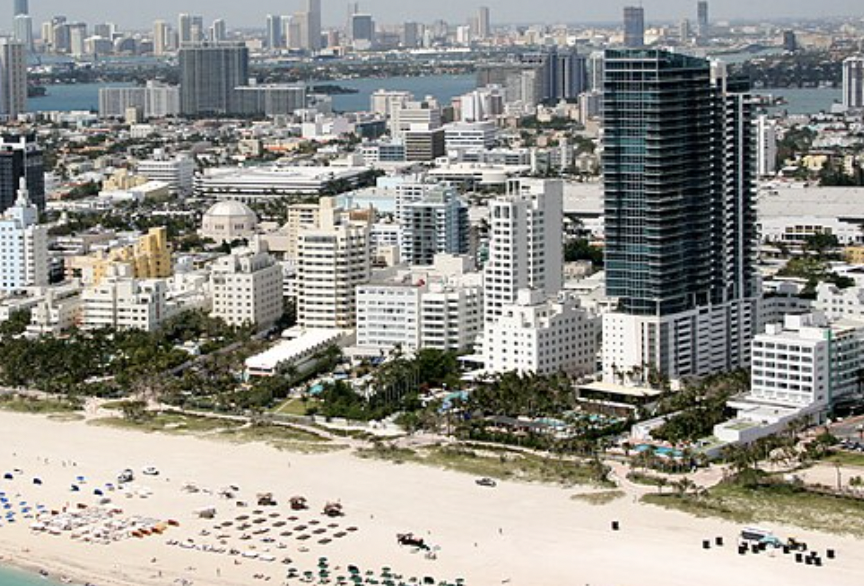
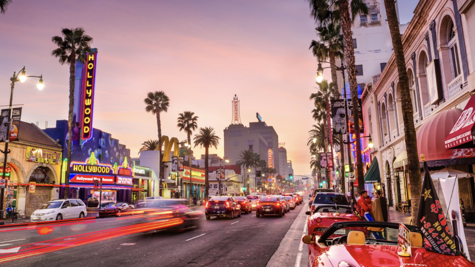
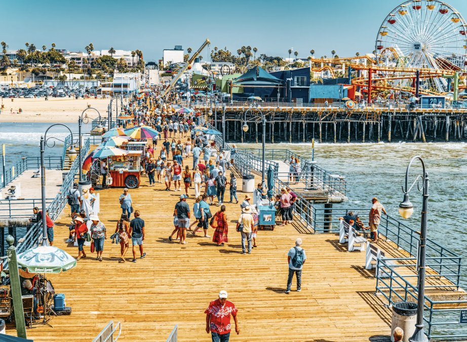
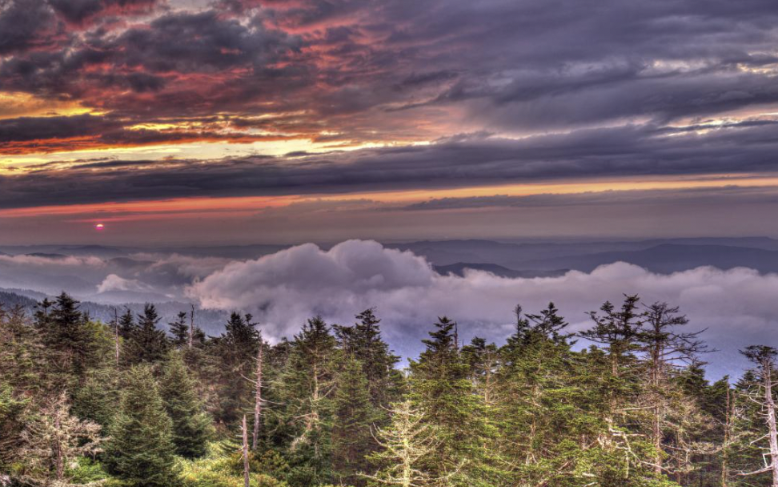
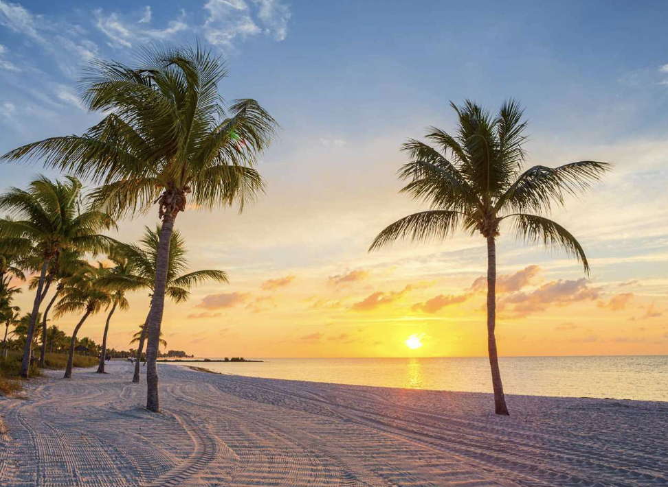
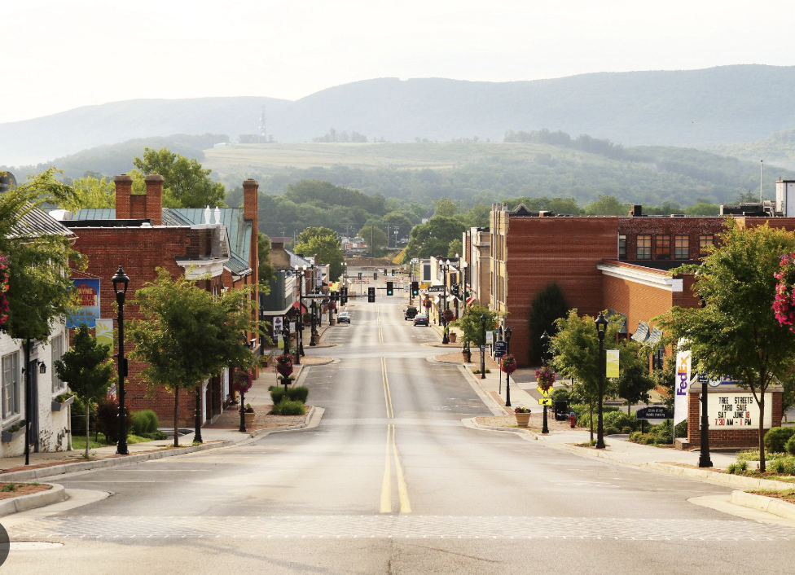

| Beach
|
Cities
|
Countryside
|
Maui, Hawaii  - Best things to do: Enjoy the scenic beaches, go snorkeling or diving in crystal-clear waters, hike along the beautiful coastline, and experience the Road to Hana drive
- Best time to visit: From April to October when the weather is warm with lots of sun and minimal rain
- Insider’s tip: Renting a car is essential for exploring the island, especially the more secluded beaches
- Recommended duration: 5 - 7 days
Know More about Maui! |
New York City, New York
- Best things to do: Visit iconic landmarks like the Statue of Liberty, Times Square, Central Park, and the Empire State Building; explore world-class museums and Broadway shows
- Best time to visit: April to June and September to early November – mild weather with fewer crowds
- Insider’s tip: Get an unlimited MetroCard for easy access to the subway and buses to explore the city efficiently
- Recommended duration: 5 - 7 days
Know More about New York City! |
Amish Country, Pennsylvania
 - Best things to do: Explore the scenic countryside, take a horse and buggy ride, visit traditional Amish farms, and learn about the Amish culture at local museums
- Best time to visit: Spring to early fall – the weather is mild and perfect for outdoor activities
- Insider’s tip: Be respectful of the Amish community and avoid taking photos without permission
- Recommended duration: 2 - 3 days
Know More about Amish Country! |
Miami Beach, Florida  - Best things to do: Relax on world-famous sandy beaches, visit the Art Deco district, enjoy water sports like jet skiing and parasailing
- Best time to visit: From March to May when the weather is warm but not too hot, and the crowds are manageable
- Insider’s tip: For a more local experience, try visiting quieter beaches like Surfside or Bal Harbour
- Recommended duration: 4 - 6 days
Know More about Miami Beach! |
Los Angeles, California
 - Best things to do: Visit the Hollywood Walk of Fame, tour Universal Studios, relax on beautiful beaches, and explore the Getty Center and Griffith Observatory
- Best time to visit: Year-round, but spring and fall offer the best combination of pleasant weather and fewer tourists
- Insider’s tip: Traffic can be heavy, so plan your itinerary wisely and consider using the metro or renting a bike
- Recommended duration: 4 - 6 days
Know More about Los Angeles! |
Napa Valley, California
- Best things to do: Tour world-renowned vineyards, taste exquisite wines, enjoy scenic hot air balloon rides, and visit charming small towns like Yountville
- Best time to visit: August to October – perfect for grape harvest season with pleasant weather
- Insider’s tip: Book wine tours and tasting appointments in advance, especially during peak seasons
- Recommended duration: 3 - 5 days
Know More about Napa Valley! |
Santa Monica, California  - Best things to do: Stroll along the iconic pier, enjoy shopping and dining at Third Street Promenade, relax on sandy beaches, and bike along the Pacific coast
- Best time to visit: Year-round, but the best weather is in late spring and early fall with mild temperatures and fewer tourists
- Insider’s tip: Visit early in the morning or late afternoon to avoid crowds and enjoy the sunset
- Recommended duration: 3 - 5 days
Know More about Santa Monica! |
Chicago, Illinois
- Best things to do: Explore Millennium Park, visit the Art Institute of Chicago, enjoy the views from the Willis Tower Skydeck, and take an architecture tour along the Chicago River
- Best time to visit: May to October – warm weather and outdoor events and festivals
- Insider’s tip: Don’t miss the deep-dish pizza and Chicago-style hot dogs for a true taste of the city
- Recommended duration: 3 - 5 days
Know More about Chicago! |
Great Smoky Mountains, Tennessee/North Carolina
 - Best things to do: Hike scenic trails, visit Clingmans Dome for panoramic views, explore Cades Cove for wildlife spotting, and visit historic cabins and museums
- Best time to visit: Spring and fall – enjoy wildflower blooms in spring and vibrant foliage in fall
- Insider’s tip: Be sure to check weather conditions before hiking as it can change rapidly in the mountains
- Recommended duration: 4 - 6 days
Know More about Great Smoky Mountains! |
|
Key West, Florida  - Best things to do: Explore Ernest Hemingway's home, visit the Southernmost Point Buoy, take a sunset cruise, and relax on secluded beaches
- Best time to visit: From December to April when the weather is warm and dry, perfect for outdoor activities
- Insider’s tip: Renting bikes or scooters is a fun way to get around the island and explore its historic sites
- Recommended duration: 4 - 6 days
Know More about Key West! |
San Francisco, California
- Best things to do: Walk across the Golden Gate Bridge, visit Alcatraz Island, ride the iconic cable cars, and explore Fisherman’s Wharf and Chinatown
- Best time to visit: September to November – pleasant weather and fewer tourists
- Insider’s tip: Bring a jacket even in summer, as the fog can make temperatures unexpectedly cool
- Recommended duration: 4 - 6 days
Know More about San Francisco! |
Shenandoah Valley, Virginia
 - Best things to do: Drive along Skyline Drive, hike in Shenandoah National Park, visit historic towns like Staunton and Luray, and explore caverns
- Best time to visit: Fall – the valley is famous for its colorful autumn foliage
- Insider’s tip: Consider visiting during weekdays to avoid crowds, especially during the fall peak season
- Recommended duration: 3 - 4 days
Know More about Shenandoah Valley! |